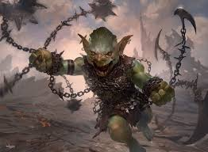

Magic the Gathering: Dominaria Standard

Blue White Control
Red Black Aggro

Mono Red Aggro

Black White Vehicles
Black Green Constrictor

Blue White God Pharaoh's Gift

Mono Green Stompy
Esper Control
This cite provides a comprehensive analysis of the Dominaria standard format. The printing of planeswalkers such as Karn, Scion of urza and Teferi, Hero of Dominaria has caused a resurgence in older vehicles and planeswalkers alike, rounding out the decklists of decks previously too fragile to disruption prior to the release of dmoinaria.